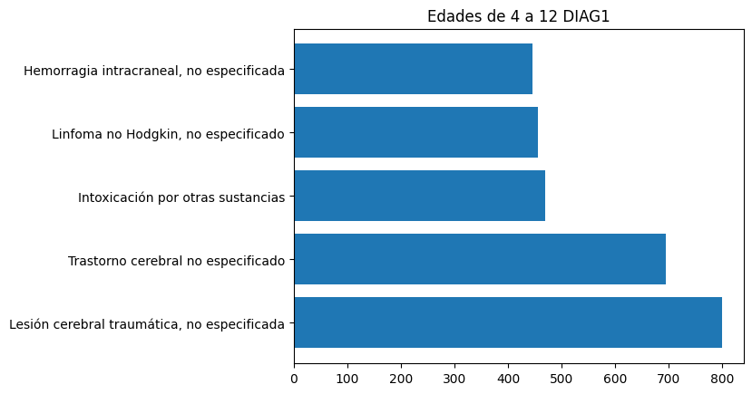
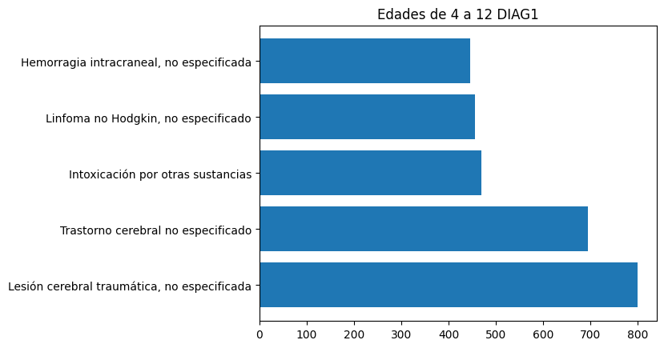

Diag 1 (0-4 años)
Diag 1 (4-12 años)
Diag 1 (12-19 años)
Diag 1 (19-40 años)
Diag 1 (40-60 años )

Diag 1 (60-80 años)
Diag 1 (80+ años)
(Dar click a las imagenes para verlas completas)
El análisis de datos relacionados con la salud es esencial para comprender las dinámicas de la población y el impacto de las políticas sanitarias a lo largo del tiempo. En este estudio, se analizarán dos tipos de datos clave: las defunciones (muertes) y los egresos hospitalarios, los cuales provienen tanto de instituciones de salud públicas como privadas. Estos datos ofrecen una visión integral del sistema de salud en Chile y nos permiten evaluar cómo la población ha respondido ante diversos factores de salud, incluyendo la prevalencia de enfermedades y las respuestas del sistema sanitario.
El objetivo principal de este trabajo es analizar las tendencias y patrones de las defunciones, cubriendo el periodo de 1990 a 2020, y los egresos hospitalarios, que se abordarán desde 2001 hasta 2020. Estos periodos permitirán un análisis exhaustivo de cómo ha cambiado la salud de la población chilena durante estas décadas, considerando no solo las enfermedades tratadas en hospitales, sino también las muertes asociadas a causas externas y otros factores.
A través de este análisis, buscaremos responder algunas preguntas clave que nos permitirán entender mejor los patrones en la mortalidad y hospitalización en Chile, tales como:
Top 10 de Enfermedades externas con mayor mortalidad
Top 10 de Enfermedades internas con mayor mortalidad
- Al observar el gráfico, uno se da cuenta de que la causa interna (enfermedades) más común en las defunciones son los infartos agudos de miocardio.
- Al observar este gráfico, podemos ver que la causa externa de muerte más común es el suicidio por lesiones autoinfligidas por ahorcamiento, seguido por dos tipos distintos de accidentes de tráfico.
A partir de los 60 años, las personas tienen más probabilidades de caer hospitalizadas, o de morir por enfermedades. Tomamos las edades a partir de los 60 años junto con las enfermedades más comunas. Investigando, cuántos días de estadía están por estas enfermedades.
Conclusión:
Las enfermedades correspondientes a los códigos de diagnóstico CIE-10 (Clasificación Internacional de Enfermedades, 10ª edición) para la lista proporcionada son:
S069 - Lesión intracraneal no especificada.
S828 - Fractura de la pierna, no especificada.
S720 - Fractura del fémur.
S626 - Lesión de los tendones y músculos de la mano.
T509 - Intoxicación aguda por alcohol.
S628 - Lesión de los tendones y músculos de la muñeca.
T814 - Coma no traumático, no especificado.
T009 - Lesión no especificada de la cabeza.
S525 - Fractura de la clavícula.
S832 - Fractura de la rótula.
En los gráficos presentados, podemos concluir que, en cuanto a las causas externas, existen diversas causas más comunes para distintos grupos etarios.
Sin embargo, se observa que las defunciones por accidentes de tráfico siempre están presentes, aunque en el caso de las personas mayores de 80 años, aparece una causa menos común: las caídas.
También se observa que en los grupos de edades entre 19 y 80 años, la lesión autoinfligida por estrangulamiento es más frecuente, lo que revela una tendencia relacionada con la edad.
En cuanto a las causas internas, se observa claramente que, en edades más avanzadas, ocurren más infartos de miocardio, mientras que en personas más jóvenes, especialmente adolescentes, se da más el caso de asfixia por sumersión y el consumo de otras sustancias.
Por otro lado, en personas aún más jóvenes, como los bebés, las lesiones craneales son comunes, lo que es característico en esta etapa de la vida.
Diagnóstico interno:
Diag 1 (0-4 años)
Diag 1 (4-12 años)
Diag 1 (12-19 años)
Diag 1 (19-40 años)
Diag 1 (40-60 años )
Diag 1 (60-80 años)
Diag 1 (80+ años)
Diagnostico externo:
Diag 2 (0-4 años)

Diag 2 (4-12 años)
Diag 2 (12-19 años)
Diag 2 (19-40 años)
Diag 2 (40-60 años )
Diag 1 (60-80 años)
Diag 2 (80+ años)
Causas mas comunes de ingreso:
Traumatismo intracraneal, no especificado es la causa más común con 170577 casos (96.74% de efectividad).
Otras causas frecuentes incluyen fracturas (columna, fémur, etc.) y lesiones en el hombro.
Tasas de efectividad:
La fractura de columna vertebral tiene una alta efectividad (99.95%), con solo 61 muertes.
Las lesiones de hombro tienen una efectividad casi perfecta (99.98%).
Condiciones con más muertes:
Traumatismo intracraneal tiene la mayor cantidad de muertes (5,740), pero con una baja tasa de mortalidad.
Complicaciones quirúrgicas tienen 670 muertes, con una efectividad del 98.73%.
La mayoría de los ingresos hospitalarios son por traumatismos y fracturas, con tasas de mortalidad muy bajas. Las complicaciones quirúrgicas son menos comunes pero tienen una mayor mortalidad.
Genero:
A partir de los datos proporcionados sobre la proporción de mortalidad por género, podemos observar lo siguiente:
- Hombres: La tasa de mortalidad es del 2.72% y supervivencia es del 97.28%.
- Mujeres: La tasa de mortalidad es del 1.53% y la supervivencia es del 98.47%.
- Conclusión:
La mortalidad es más alta en hombres (2.72%) en comparación con las mujeres (1.53%).
Esto sugiere que los hombres tienen una mayor probabilidad de fallecer bajo las condiciones estudiadas,
lo cual podría estar relacionado con factores biológicos, sociales o el tipo de enfermedades o causas que afectan a cada género.

Mortalidad por edad
Edad:
Tendencias de mortalidad por edad:
La mortalidad aumenta con la edad, como se esperaba, y los más jóvenes tienen una probabilidad mucho más alta de sobrevivir en comparación con los más viejos.
Impacto del sexo:
Aunque el sexo influye en la mortalidad, parece que el factor más importante es el grupo de edad, con una distinción entre hombres y mujeres en algunas categorías.
Mortalidad por genero
Edad y genero:
1)Proporciones por género y grupo de edad: La tabla muestra la mortalidad y sobrevivencia por género y edad.
2)Tendencias generales:
Jóvenes (0-19 años): Mortalidad baja, con más del 99% de sobrevivencia. Los hombres tienen ligeramente más mortalidad.
Adultos jóvenes (20-39 años): Mortalidad aumenta, especialmente en hombres, superando el 0.6% en el grupo de 20-29 años.
Adultos de mediana edad (40-59 años): Mortalidad supera el 1% en hombres, especialmente en mayores de 50 años.
Adultos mayores (60 años en adelante): Mortalidad aumenta significativamente, con mayores tasas en hombres (hasta 6.4% en 70-79 años).
Menores de un año: Mortalidad cercana al 1%, similar en ambos géneros.
3)Análisis de género: Los hombres tienen mayor mortalidad, especialmente en los grupos mayores, por factores biológicos y sociales.
4)Tendencias según la edad: La mortalidad aumenta con la edad, siendo baja en jóvenes y alta a partir de los 60 años.
5)Posibles factores a explorar:
Condiciones de salud: Enfermedades crónicas afectan a adultos mayores.
Estilos de vida: El consumo de tabaco y alcohol contribuye a la mortalidad, especialmente en hombres.
Acceso a atención médica: La desigualdad en el acceso a la salud influye en las tasas de mortalidad.

Mortalidad por edad y genero
Region:
1)Proporción de Mortalidad: Las tasas varían entre 1.3% y 2.6%. Las regiones con menor mortalidad son la región 02 (1.30%) y la región 10 (1.78%), mientras que las más altas son la región 16 (2.58%) y la región 05 (2.35%).
2) Proporción de Supervivencia: La supervivencia es alta, entre 97.4% y 98.7%. Las regiones con mayor supervivencia son la región 10 (98.22%) y la región 11 (98.50%). Las menores tasas se encuentran en la región 16 (97.42%) y la región 05 (97.65%).
3) Análisis comparativo: Las regiones con mayor mortalidad (como la región 16) muestran una ligera disminución en la supervivencia, pero en general, las tasas de supervivencia son superiores a las de mortalidad, con diferencias moderadas entre regiones.
4) Factores a considerar:
Condiciones de salud regionales: Las diferencias pueden estar relacionadas con el acceso a servicios de salud.
socioeconómicos y ambientales: El nivel socioeconómico, la educación y las condiciones de vivienda pueden influir.
Estilos de vida: Diferencias en hábitos como alimentación, ejercicio, y consumo de tabaco o alcohol podrían afectar las tasas de mortalidad.

Mortalidad por region
Dato curioso:
Mediante el uso de regresión lineal, una técnica estadística que nos permite modelar la relación entre variables, pudimos realizar una predicción sobre la cantidad de muertes para el mes de enero de 2050. Al analizar los datos históricos disponibles y ajustando una línea de mejor ajuste a esos datos, el modelo estimó que en ese mes morirán aproximadamente 16,064 personas.
Esta predicción se basa en tendencias pasadas y asume que las condiciones y factores que han influido en las muertes en años anteriores seguirán siendo similares en el futuro cercano. Cabe destacar que esta estimación puede verse afectada por muchos factores imprevisibles, como cambios en las políticas de salud, avances médicos, variaciones en los comportamientos sociales y factores ambientales que podrían alterar la tasa de mortalidad.
más información, visita el repositorio: este sitio web.
Gracias por ver